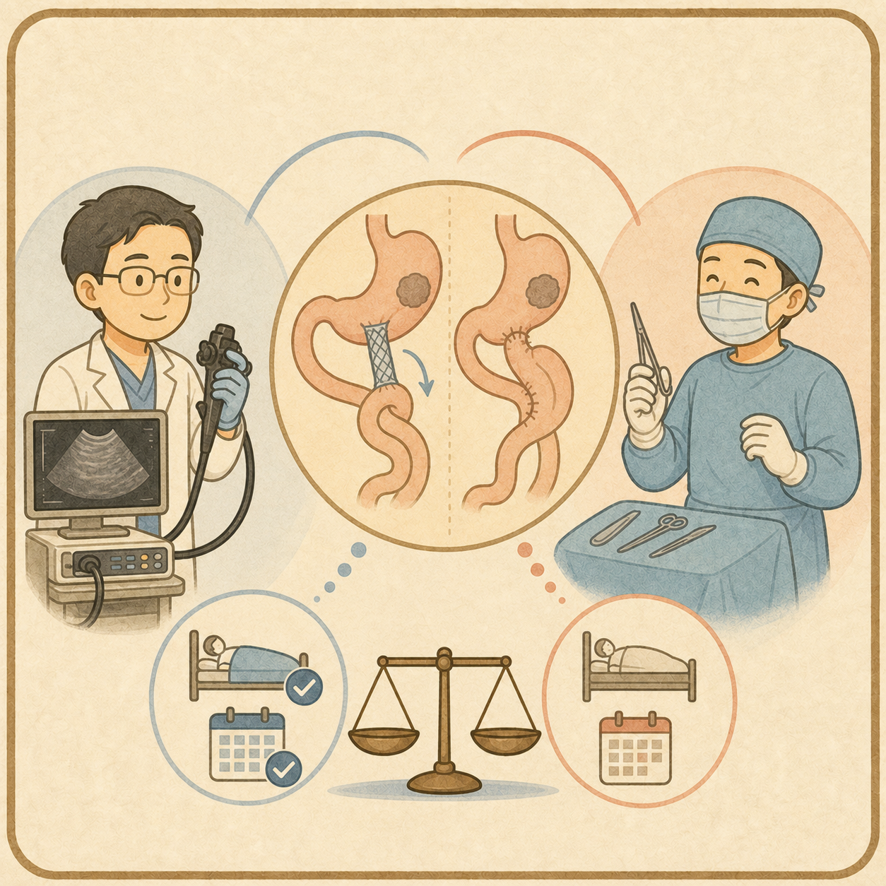

Gut / Q1Multicentre randomized superiority trialDOI: 10.1136/gutjnl-2025-336339
日本語: 悪性胃排出障害74例をEUS下胃空腸吻合術（EUS-GE）と外科的胃空腸吻合術（SGJ）に無作為化した多施設優越性試験です。主要複合評価項目はEUS-GE群7.9%、SGJ群38.9%で、EUS-GEは固形食再開、入院期間、QOL、医療費でも良好でした。適切な専門施設では、低侵襲なEUS-GEを標準的選択肢として位置付ける根拠になります。
English: In 74 patients with malignant gastric outlet obstruction, EUS-GE reduced the composite primary endpoint versus surgical gastrojejunostomy (7.9% vs 38.9%). It also enabled earlier solid food intake, shorter hospitalization, better quality of life, and lower costs.
